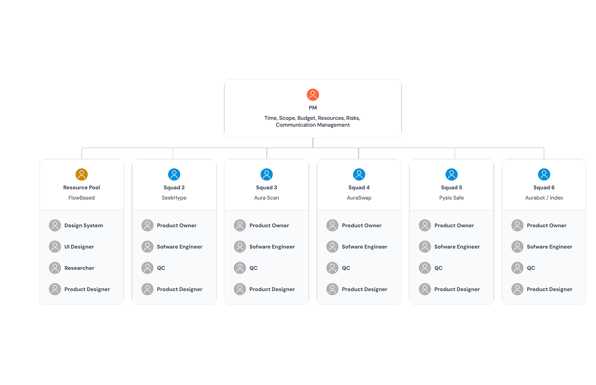

In short
Aura ran as a permissioned CosmWasm chain built for NFTs. Every new dApp needed bespoke onboarding, and the pool of developers who could build on it was a fraction of the EVM world's.
Stop building the NFT-first consumer surface and reposition the chain as permissionless and EVM-compatible, accepting a known address-model compromise to ship inside one release cycle.
Aura shipped EVM compatibility in May 2024 and became a general-purpose L1. Ecosystem totals now stand at 20+ dApps and 14.5M+ deployed contracts public · cumulative, measured after my exit.
Discovery

User insight
Our users were developers, not consumers. Onboarding a team meant teaching CosmWasm and Rust to people who already had audited Solidity in hand. The objection was never "we don't want to build on Aura" — it was "we'd have to rewrite."
Data insight
The NFT-native cohort the chain was designed for contracted sharply through 2023. Meanwhile our own infrastructure carried steady usage from ordinary contract and wallet activity. The tooling had found a different audience than the positioning had.
Business insight
Aura's stated market was emerging countries, Southeast Asia first. Enterprise and government pipelines there ask for asset verification, compliance and audit trails, not collectibles. Every serious inbound conversation drifted toward tokenizing something real.
The permission gate compounded the developer problem: builders had to ask before they could ship. And continuing to sell an NFT chain meant selling against our own pipeline.
The four questions, answered in writing
- Who and what problem? Web3 developers and enterprise integrators who couldn't deploy on Aura without rewriting in an unfamiliar stack, behind a permission gate.
- Why now? Cosmos-native EVM tooling had matured enough to integrate rather than build, and the NFT thesis was visibly decaying. Waiting a year meant paying to maintain a positioning we no longer believed.
- What outcome would tell us it worked? Any Ethereum-toolchain team able to deploy without a rewrite or an approval step, with the leading indicator being external dApps deploying without our hand-holding.
- Is it feasible? Yes, with one caveat: Ethereum and Cosmos generate addresses differently, so full unification was not achievable in the release window.
The decision: cancelling the NFT app-chain
Aura spent 2021–2023 as a permissioned CosmWasm chain focused on NFTs, in its own words. On 23 May 2024 it shipped Aura EVM and became a permissionless, general-purpose, EVM-compatible L1. The company calls that "a pivotal shift in Aura's trajectory" and its "second phase." The integration is the visible half. The cancellation is the half that mattered.
Options on the table
A — Stay a permissioned NFT app-chain and go deeper on
vertical NFT tooling. Cheapest; bets the company on a contracting
segment.
B — Full migration to EVM. Cleanest developer story; breaks
every existing CosmWasm dApp and every deployed address.
C — Dual-environment. EVM alongside CosmWasm, separated into
address zones, conversion between them, unification deferred.
Criteria I judged on
Developer reach, cost to existing builders, time to ship, and reversibility.
What I chose
Option C, the only one that widened the developer funnel without breaking the dApps already live. The price was a real defect: a user cannot use one address across both environments, only convert between them.
What I killed
The NFT-first consumer roadmap. Twilight Hub, the metaverse and NFT destination in our original architecture, and the NFT launchpad both came off the plan.
I chose to ship that address defect visibly, documented in the release notes and put to a governance vote, rather than hold the upgrade for a quarter to abstract it away. Reach compounds; the address seam was a fix we could make later against a larger ecosystem.
Twilight Hub and the launchpad were the most fundable-sounding items we had, and the reason several people had joined the company. Cutting them was the decision. The EVM integration was the consequence.
Solution design
The visible work was making one chain read as one product while it ran two execution environments. Three surfaces carried the decision.
Aurascan — the explorer
Had to render CosmWasm and EVM transactions in one history without asking users to know which zone they were in. Still live in the ecosystem today.
Address conversion
The seam. The flow had to make "these two addresses are you" legible without a lecture on address derivation — the hardest piece of interface work in the release.
Aura Safe — multisig
Fine-grain access control was our enterprise wedge and had to survive the change intact. Still live in the ecosystem today.
Validation. Expert usability inspection against the existing flows, plus dogfooding by our own integrators as first users of the conversion path — appropriate for an enhancement to live surfaces rather than a net-new experience. The upgrade itself went to an on-chain governance vote before release.


Delivery
Two things moved between spec and ship. Address unification was cut to a post-release roadmap item once we confirmed the decimal mismatch between the two environments couldn't be reconciled in the window, and we adopted an existing conversion module rather than building our own.
The programme also ran in the shadow of the mainnet experience. Xstaxy was announced for 1 October 2022, slipped to November, and shipped on 20 March 2023 after fifteen months of development. I was present for the whole of that five-month slip, and it is exactly why I scoped the EVM upgrade to one release with a stated, accepted defect instead of a complete migration.
Learning and follow-up
Shipped, not measured by me. Aura EVM went live 23 May 2024; I left on 5 June 2024, before any meaningful adoption cycle. What I would have tracked: external contract deployments per month split by environment, and the share of new dApps arriving without direct BD involvement, which is the real test of whether permissionless changed anything.
1.5B+ transactions
Cumulative network total, published by Aura today public. Not my result.
14.5M+ contracts deployed
Cumulative network total public. The most product-legible of the four, and the one v1 of this page never used.
141,000+ active addresses
Unique, cumulative public. Across 20+ dApps in the ecosystem.
The strategic bet resolved after I left, and it resolved in favour of the direction. Aura took strategic investment from FPT Corporation in February 2025, formally repositioned as "the RWA chain for enterprise, entertainment and government" that same month, and signed a blockchain agreement with the Government of Sierra Leone days later. All three are eight or more months after my exit. I owned the decision to stop being an NFT chain. I did not own what it became next.
What I'd do differently
For most of 2023 I read the NFT-market contraction as a market problem, and only acted on it as a positioning problem in 2024. The signal was in our own product data much earlier: our infrastructure tools were being used for ordinary contract activity while we kept describing ourselves as an NFT chain. That "who is actually using us, and for what" analysis belonged at the start of 2023, not the end.
The address-conversion flow should also have shipped with usage instrumentation on day one. I left having knowingly accepted a UX defect and with no way to prove how much it cost.